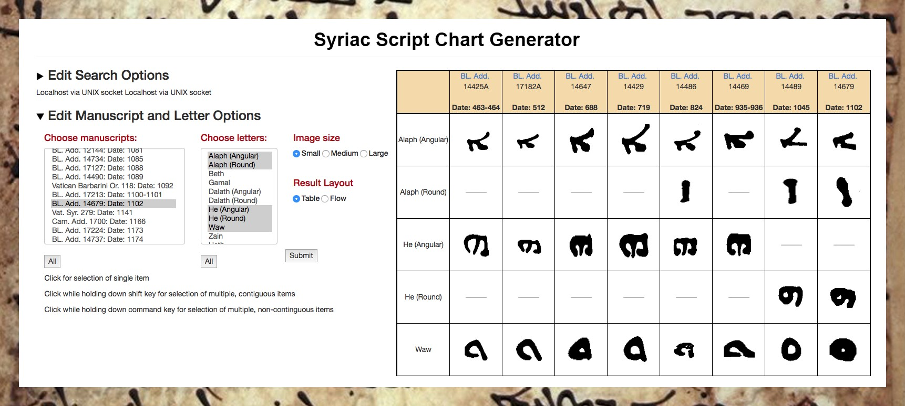

Having the world’s largest database of Syriac letter forms allows one to both describe and quantify important developments in Syriac manuscript culture. In some cases, this results in computer assisted paleography. That is, automated results provide data that help human paleographers better localize Syriac manuscripts. In other cases, our data challenges long held assumptions in the field (e.g. the traditional way of categorizing Syriac script) or opens up new fields of inquiry (e.g. the relationship between script and genre). Although more details appear in project publications, the following provide several quick case examples for how large data sets, digital analysis, and visual analytics can help researchers address key philological and historical problems.
The project database has over 110,000 individual letter images, each “hand” trimmed and with associated metadata. This enables the instant generation of script charts in accord with user specifications. For example, as shown in the above chart, one can trace the relationship of various letter forms to each other over time.
Having access to 96% of early, securely dated Syriac manuscripts allows us to identify the first appearance of various letter forms. These, in turn, help scholars estimate composition dates for the majority of Syriac manuscripts that do not have a scribal colophon saying when they were written.
This chart indicates whether a specific manuscript has an E (Estrangela) form of a given letter (top of chart), an S (Serto) form of a given letter (bottom of chart), or both forms of a given letter (middle of chart). This allows one to quickly detect cases where a manuscript mixes E and S forms of a given letter. Every time a line crosses from top to bottom or bottom to top it represents a scribe using the E form of some letters but the S form of others. These results strongly suggest that the most typical way of classifying Syriac script as either exclusively Estrangela or Serto does not work particularly well with early manuscripts.
As with securely dated manuscripts, data from 593 manuscripts that the cataloger William Wright estimated as being written prior to the 1100s also shows the prevalence of mixed-script manuscripts. Every time a line crosses from top to bottom or bottom to top it represents a scribe using the E form of some letters but the S form of others.
This chart compares the prevalence of E and S letter forms in biblical versus non-biblical manuscripts. Although over times scribes of all genres increasingly used S letter forms, the shift from majority E to majority S forms occurs hundreds of years earlier among non-biblical as compared to biblical manuscripts. This strongly suggests that Syriac scribes considered E letter forms as part of a prestige script. Although S letter forms could be written more quickly, when copying biblical materials scribes were more conservative in maintaining Estrangela letter forms.